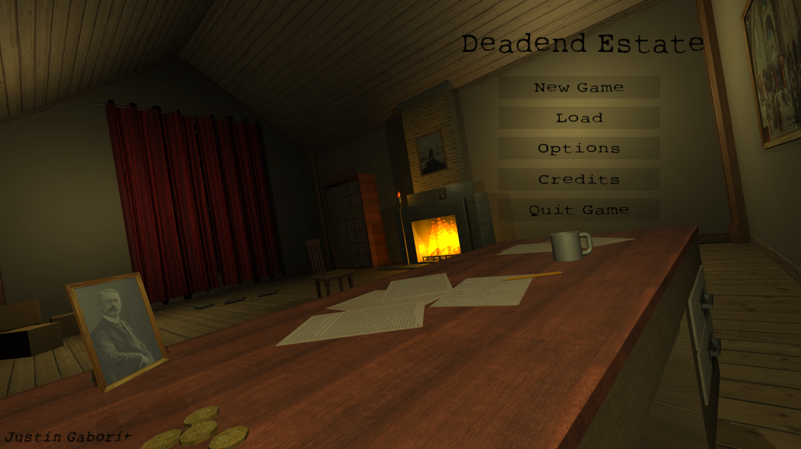
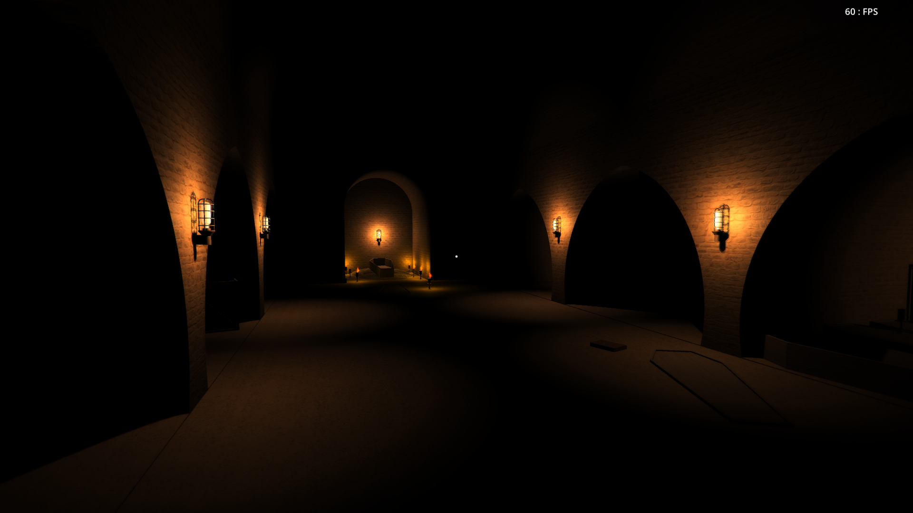

Dead-end Estate was my introduction to the game development world and served as a project that taught me the most about the tools, skills, and team members necessary to develop and launch a game of any size. The game uses a mix of both gameplay and text based decision making to tell its story. I was inspired by many of the no budget short horror games that were making waves in the indie scene from 2012 to 2015.
The adventure begins with the player being dropped at the front gates of the estate armed with only his flashlight and small bit of information surrounding the story. Because I had never made a game prior to this one, I had the role of 3D modelling, texturing, designing, and programming the game on my own. My development partner Evan Barker worked alongside me to deliver the games story and narrative elements found throughout the project.
Early on in the projects development cycle, most of my time was spent designing level layouts and 3D modelling level kits and props used to piece the game together and provide the player a sense of immersion. I textured most of the games scenes by accessing files from public texture databases and websites. The projects visual fidelity could best be seen in its main menu.
Once inside the mansion, the player begins to find clues that point him in the general direction of where keys can be found. Keys are scattered around the estate and can be used to access new areas of the mansion.
Being that is was my first ever game project, I think the biggest take away I got from development was a better sense of project scope. When the game launched in February of 2017, we were pleasantly surprised to see that just under 200 users on gamejolt.com had played the game.